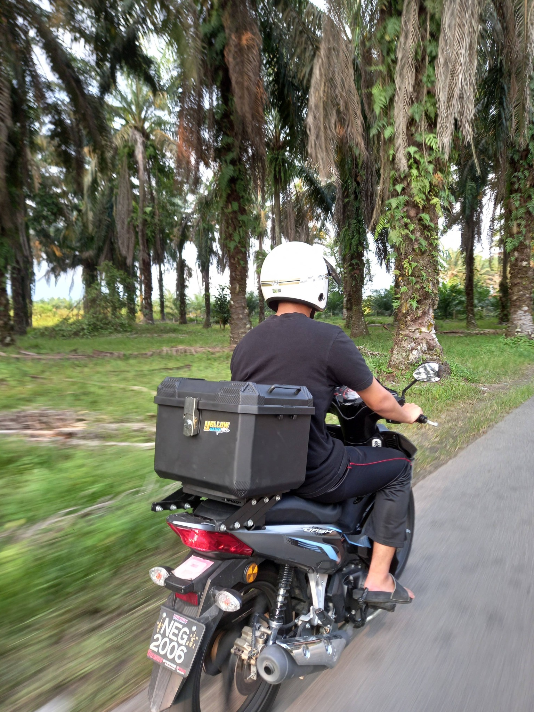

<style>
  .entry-header { padding: 2.5rem 0 2rem; border-bottom: 1px solid var(--rule); }
  .entry-meta-top { display: flex; align-items: center; gap: 0.6rem; margin-bottom: 1rem; flex-wrap: wrap; }
  .entry-tag { font-family: var(--mono); font-size: 0.6rem; font-weight: 500; letter-spacing: 0.1em; padding: 1px 6px; border-radius: 2px; display: inline-block; background: var(--tag-service-bg); color: var(--tag-service); }
  .entry-org { font-family: var(--mono); font-size: 0.8rem; color: var(--ink-muted); }
  .entry-org a { color: var(--accent); text-decoration: none; }
  .entry-org a:hover { text-decoration: underline; }
  .entry-date-range { font-family: var(--mono); font-size: 0.65rem; color: var(--ink-muted); }
  .entry-title { font-family: var(--serif-cn); font-size: 1.5rem; font-weight: 400; color: var(--ink); line-height: 1.35; margin-bottom: 0.5rem; }
  .entry-desc { font-family: var(--serif-cn); font-size: 0.9rem; font-weight: 300; color: var(--ink-secondary); line-height: 1.9; margin-bottom: 0; }

  .patrol-section { padding: 2rem 0; }
  .patrol-label { font-family: var(--mono); font-size: 0.65rem; font-weight: 500; color: var(--ink-muted); letter-spacing: 0.14em; text-transform: uppercase; margin-bottom: 1.5rem; }

  .patrol-list { list-style: none; }
  .patrol-item { padding: 1.5rem 0; border-bottom: 1px solid var(--paper-mid); }
  .patrol-date { font-family: var(--mono); font-size: 0.65rem; color: var(--ink-muted); margin-bottom: 0.75rem; }
  .patrol-item img { display: block; width: 100%; max-width: 480px; border-radius: 3px; }
  .patrol-photos { display: flex; gap: 8px; }
  .patrol-photos img { width: calc(33.33% - 6px); max-width: 200px; border-radius: 3px; }

  .source-note { font-family: var(--mono); font-size: 0.6rem; color: var(--ink-muted); letter-spacing: 0.04em; margin-top: 1.5rem; }

  .entry-nav { padding: 1.5rem 0; display: flex; align-items: baseline; gap: 0.75rem; border-top: 1px solid var(--paper-mid); }
  .nav-link { font-family: var(--mono); font-size: 0.65rem; color: var(--ink-secondary); text-decoration: none; transition: color 0.15s; }
  .nav-link:hover { color: var(--accent); }
  .nav-sep { color: var(--rule); font-size: 0.75rem; }

  footer { padding: 2rem 0 3rem; display: flex; justify-content: space-between; align-items: center; }
</style>

<section class="entry-header">
  <div class="entry-meta-top">
    <span class="entry-tag">季度记录</span>
    <span class="entry-org"><a href="cintahaiwan.html">马来西亚动物声援会</a></span>
    <span class="entry-date-range">2026年4月—6月</span>
  </div>
  <h1 class="entry-title">每周巡逻记录 · 2026年4月—6月</h1>
  <p class="entry-desc">志工们每周尽职尽责地执行巡查任务，关注动物的安全与栖息环境。每周巡逻不仅能及时发现动物需要帮助的情况，也能有效维护和改善它们的生存条件。感谢所有志工的辛勤付出，以及社会各界对本会工作的支持。</p>
</section>

<section class="patrol-section">
  <p class="patrol-label">巡逻记录</p>
  <ul class="patrol-list">

    <li class="patrol-item">
      <p class="patrol-date">2026年5月19日</p>
      
    </li>

    <li class="patrol-item">
      <p class="patrol-date">2026年5月2日</p>
      
    </li>

    <li class="patrol-item">
      <p class="patrol-date">2026年4月25日</p>
      
    </li>

    <li class="patrol-item">
      <p class="patrol-date">2026年4月17日</p>
      
    </li>

    <li class="patrol-item">
      <p class="patrol-date">2026年4月10日</p>
      
    </li>

    <li class="patrol-item">
      <p class="patrol-date">2026年4月3日</p>
      <div class="patrol-photos">
        
        
        
      </div>
    </li>

  </ul>
  <p class="source-note">以上内容整理自动物声援会官方 Facebook，持续更新至2026年6月底。如有更新欢迎联络告知。</p>
</section>

<nav class="entry-nav">
  <span class="nav-sep">·</span>
  <a class="nav-link" href="cintahaiwan.html">返回马来西亚动物声援会</a>
</nav>

<footer>
  <span class="footer-mark">INDEX 50 · v2</span>
  <a class="footer-back" href="index.html">← 返回首页</a>
</footer>
